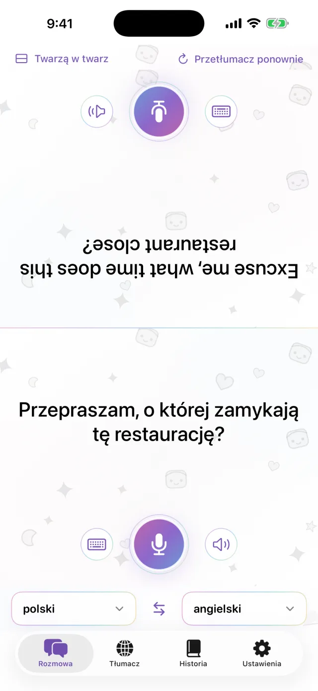
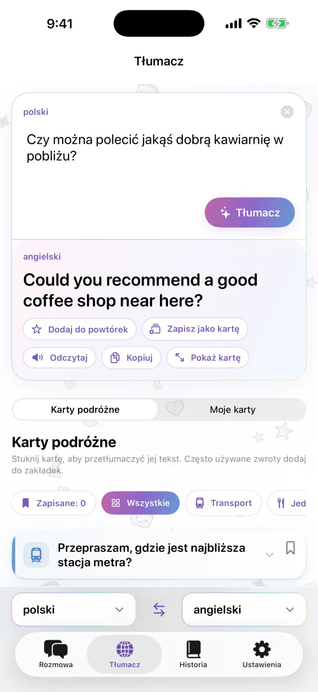
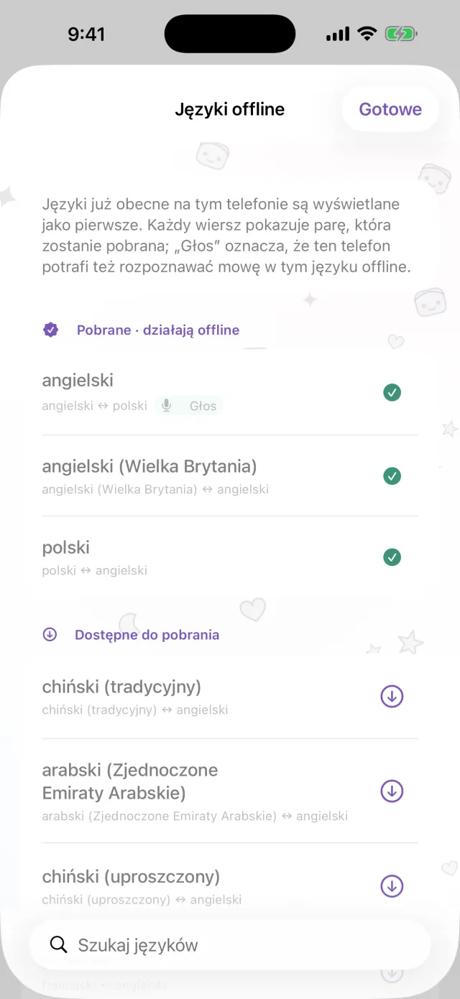
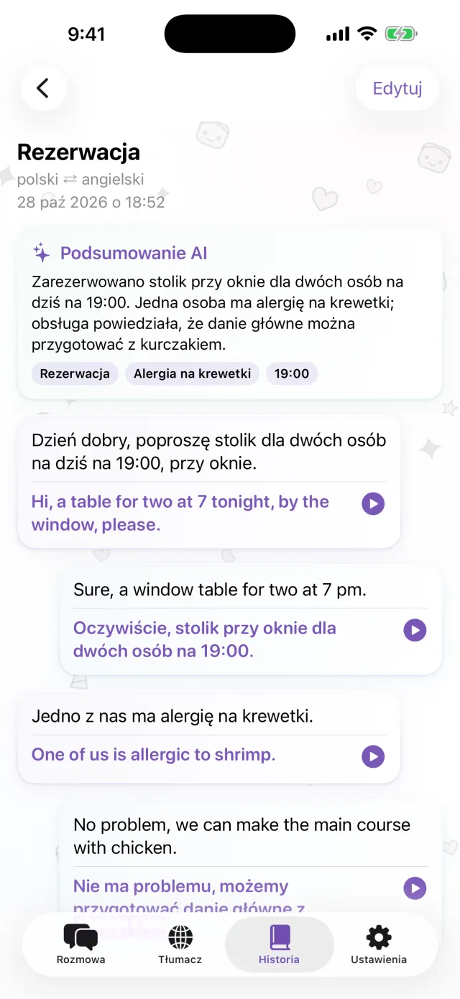
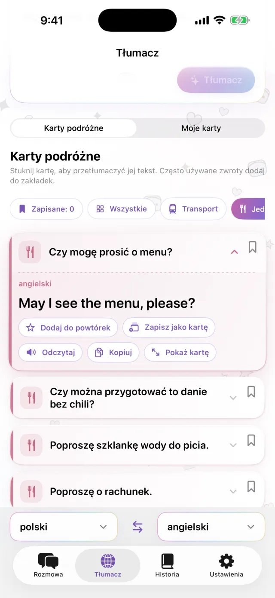
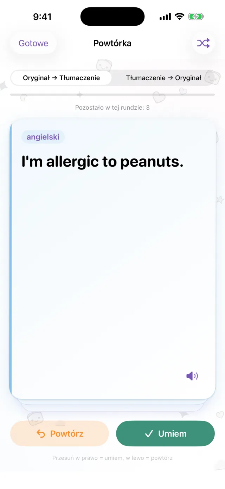

Tłumacz na iPhone'a
Tłumacz na iPhone'a
Połóż iPhone'a między wami.
To wszystko.
Stuknij mikrofon i mów. Tłumaczenie pojawi się na drugiej połowie ekranu, zwrócone do rozmówcy. Gdy on odpowiada, działa to tak samo. Pobierz języki wcześniej, a tłumacz zadziała bez internetu.
Pobierz z App Store- Około 20 języków
- Offline po pobraniu
- Bez rejestracji

Pisanie
Nie możesz mówić na głos? Wpisz tekst.
W cichym miejscu albo gdy rozmówca mówi zbyt szybko, po prostu wpisz zdanie. Tłumaczenie możesz powiększyć na cały ekran i pokazać rozmówcy.
- Skopiuj tłumaczenie albo odtwórz je na głos
- Zamień oba języki jednym stuknięciem

Klawiatura tłumacza
Najpierw powiedz po swojemu, potem wyślij lepiej
Odpowiadając w obcym języku, najtrudniej jest wyrazić to, co naprawdę chcesz powiedzieć. Na klawiaturze Galaretka Tłumacz najpierw piszesz zdanie w swoim języku, tak jak powiedziałbyś je na co dzień. Przełącz się na klawiaturę, a tłumaczenie już tam jest, razem z trzema wersjami napisanymi przez AI: swobodną, uprzejmą i krótką. Wybierz tę, która pasuje, i stuknij, by ją wstawić. Nie rozumiesz wiadomości od rozmówcy? Skopiuj ją i przełącz klawiaturę. Zobaczysz, co znaczy, oraz kilka odpowiedzi w jego języku.
- Działa w polach tekstowych większości aplikacji (poza polami haseł)
- Tłumaczenie odbywa się na iPhonie, a klawiatura nie zapamiętuje tego, co wpisujesz
- Cofnij przywraca Twoje oryginalne słowa
Offline
Tłumaczy też bez internetu
Tłumaczenie, rozpoznawanie mowy i czytanie na głos działają na iPhonie. Pobierz potrzebne języki przed podróżą, a zadziała to w samolocie i zanim kupisz kartę SIM. Domyślnie nic, co powiesz, nie jest nigdzie wysyłane, a nagrania nie są zachowywane.

Pro
Podsumowanie każdej rozmowy
Po rozmowie w Historii zobaczysz krótki tytuł, podsumowanie i słowa kluczowe. Dzięki temu później znajdziesz „rezerwację kolacji w Osace”, bez przewijania wszystkich zdań. Podsumowanie powstaje na iPhonie dzięki Apple Intelligence i nie jest wysyłane. Jeśli rozmowa jest zbyt krótka, podsumowanie się nie tworzy, żeby nie dopisywać rzeczy, których nikt nie powiedział.
- Usuń całą rozmowę albo pojedyncze zdanie

Karty z frazami
Zapisz to, co mówisz za każdym razem
Adres hotelu, alergia pokarmowa, stacja, której szukasz. Zapisz je jako karty i nie musisz wpisywać ich ponownie. Stuknij kartę, a zostanie przetłumaczona na język rozmówcy. W aplikacji są też gotowe karty na transport, jedzenie, nocleg i zakupy.

Pro
Powtarzaj zapisane zdania, gdy przyjdzie na nie pora
Stuknij gwiazdkę przy zdaniu, by zapisać je do powtórki. Jeśli je pamiętasz, wróci po 1, 3, 7, 14 i 30 dniach. Jeśli nie, zobaczysz je ponownie tego samego dnia. Możesz ćwiczyć od oryginału do tłumaczenia albo odwrotnie. Ta funkcja jest dostępna w Pro.

Do czego się przydaje
- Zamawianie w małej restauracji
- Podawanie taksówkarzowi adresu
- Tłumaczenie alergii w aptece
- Zostawianie bagażu w recepcji hotelu
- Pytanie o drogę
Zobacz w 30 sekund
W tym filmie włączony jest tryb samolotowy.
Najważniejsze informacje
| Języki | Około 20 (języki, które Apple tłumaczy na urządzeniu) |
|---|---|
| Offline | Tak, po pobraniu języków |
| Wprowadzanie głosowe | Tak. Przy pierwszym użyciu model mowy (150–400 MB) pobiera się przez Wi‑Fi |
| Podsumowanie AI | iPhone obsługujący Apple Intelligence |
| Klawiatura tłumacza | Działa w każdej aplikacji. Alternatywy AI wymagają Apple Intelligence albo własnego klucza AI |
| Konto | Niepotrzebne |
| Cena | Bezpłatna. Pro jest płatne osobno (patrz niżej) |
| Wymagania | iPhone z iOS 18 lub nowszym |
- Za pierwszym razem potrzebujesz internetu, aby pobrać języki.
- Ceny są wyświetlane w App Store w Twojej lokalnej walucie.
Wersja bezpłatna i Pro
Bezpłatna
- Rozmowa twarzą w twarz
- Pisanie i wyświetlanie na pełnym ekranie
- Klawiatura tłumacza z alternatywami AI
- Tłumaczenie offline
- Karty podróżne i 3 własne karty
- Mały baner reklamowy (obejrzyj krótki film, by przez 15 minut nie widzieć reklam)
Pro
- Podsumowanie AI każdej rozmowy
- Pełna historia tłumaczeń
- Nieograniczona liczba kart i powtórki w odstępach czasu
- Bez reklam
Tygodniowo, miesięcznie lub jednorazowy zakup.
Przed wyjazdem pobierz języki.
Pobierz z App StoreiPhone · iOS 18 lub nowszy · Bezpłatne pobieranie · Jak działa każdy ekran